Inverse Tohka
Contributor: Nguyễn Thái Sơn
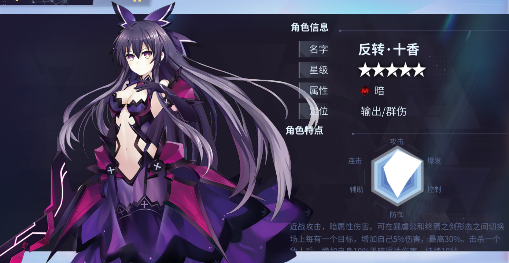
Tổng quan
Tên: Inverse TohkaHệ nguyên tố: Dark
Vai trò: DPS / AOE Damage
Tinh linh cận chiến, sát thương bóng tối. Có thể chuyển đổi giữa [Nahemah - Bạo Ngược Công] và [Paverschlev - Chung Yên Kiếm]. Tự tăng 5% dmg, tối đa 30% với mỗi mục tiêu trên sân. Sau khi tiêu diệt 1 mục tiêu, tự tăng 10% dark dmg trong 10s. Mỗi khi gây sát thương có 10% gây debuff [Vulnerable], giảm kháng dark 15% trong 10s
Cơ chế năng lượng: Khởi đầu: 0 Max: 100
Khi sử dụng skill và các đòn đánh thường sẽ tích lũy năng lượng
Khi đạt đủ năng lượng, tiêu hao toàn bộ để kích hoạt [Explosive Energy], tăng 10% pen rate và 30% pen dmg trong 8s
Thông tin kĩ năng
Đánh thường: Nahemah 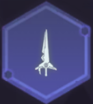o Sử dụng Nahemah/Paverschlev chém về phía trước.
o Các điểm phụ, chỉ áp dụng cho skill này (chỉ số max):
* Tốc độ đánh +8%
* Mỗi khi tấn công có 20% hồi 1 năng lượng
* Khi gây sát thương xuyên sẽ khiến mục tiêu nhận thêm 20% dark pen dmg 1 lần
* Tăng 10% dmg
Skill 1: Hollow Slash - Đoạn Không 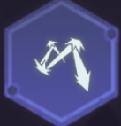
o Nahemah: nhảy lên và tấn công 4 đòn vào khoảng không phía trước, gây tổng cộng 220% dmg
o Paverschlev: nhảy lên và chém liên tục 3 kiếm khí về phía trước, gây ttoorng cộng 210% dmg
o Nâng cấp 1: Nahemah - tăng thành 5 đòn, gây tổng cộng 360% dmg. Paverschlev - kiếm khí sẽ bay thêm 1 đoạn, tăng thành 330% dmg
o Nâng cấp 2: Nahemah - tăng thành 6 đòn, và thêm 1 đòn trọng kích vào trung tâm, gây tổng cộng 510% dmg. Paverschlev - mở rộng kiếm khí, tổng sát thương tăng lên 480%
o Nâng cấp cuối: Nahemah - phạm vi sát thương tăng 20%. Paverschlev - phạm vi sát thương tăng 20%, tăng tổng sát thương lên 630%
o Các điểm phụ, chỉ áp dụng cho skill này (chỉ số max):
* Hit rate +8%
* Giảm 1.5s hồi chiêu
* Bỏ qua 9% def của mục tiêu
* Tăng 10% dmg
Skill 2: Dark Blade - Lưỡi gươm bóng tối 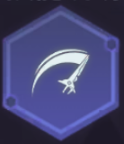
o Nahemah: hất tung kẻ địch trước mặt, gây 230% dmg
o Paverschlev: xoay xung quanh và chém kẻ địch, gây 230% dmg
o Nâng cấp 1: Nahemah - chém thêm 1 đòn, tổng sát thương 380%. Paverschlev - tăng thêm số đòn, tổng sát thương 380%
o Nâng cấp 2: Nahemah - chém thêm 2 đòn, tổng sát thương 530%. Paverschlev - tăng thành 10 đòn, tổng sát thương 580%
o Nâng cấp cuối: Nahemah - phạm vi sát thương tăng 20%. Paverschlev - khi xoay sẽ hút kẻ địch xung quanh, tổng sát thương 680%
o Các điểm phụ, chỉ áp dụng cho skill này (chỉ số max):
* Hit rate +8%
* Giảm 1.5s hồi chiêu
* tự tăng 10% def trong 10s
* Tăng 10% dmg
Skill 3: Disillusionment - Phá mộng 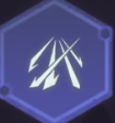
o Nahemah: Tấn công kẻ địch trong phạm vi trước mặt 4 đòn, gây tổng cộng 260% dmg
o Paverschlev: giải phóng 6 đợt kiếm khí, gây 300% dmg
o Nâng cấp 1: Nahemah - tăng thành 5 đòn tấn công, sau đó trọng kích vào trung tâm, tổng sát thương 410%. Paverschlev - 9 đợt kiếm khí, tổng sát thương 450%
o Nâng cấp 2: Nahemah - tăng thành 7 đòn tấn công, sau đó trọng kích vào trung tâm, tổng sát thương 560%. Paverschlev - 12 đợt kiếm khí, tổng sát thương 600%
o Nâng cấp cuối: Nahemah - đợt trọng kích sẽ toả ra 4 kiếm khí, tổng sát thương 720%. Paverschlev - sau khi kiếm khí kết thúc sẽ thục hiện trọng kích, tăng số đợt tấn công thành 17, tổng sát thương 860%
o Các điểm phụ, chỉ áp dụng cho skill này (chỉ số max):
* Hit rate +8%
* Giảm 15% dmg của mục tiêu bị đánh trúng trong 10s
* Tăng thêm 10% dmg với mục tiêu dưới 30% máu
* Tăng 10% dmg
Ultimate: Paverschlev - Sword of the End
o Paverschlev tích tụ năng lượng và chém ra kiếm khí hủy diệt, gây 1700% dmg lên kẻ địch trước mặt
Kết tinh
Quỷ vương: Bạo Ngược Công «Nahemah» (暴虐公 - Tyrant Ruler)
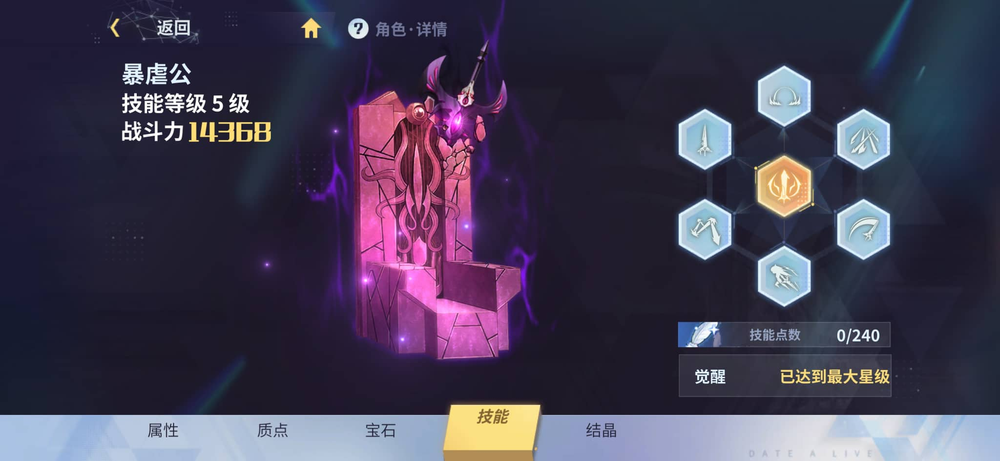
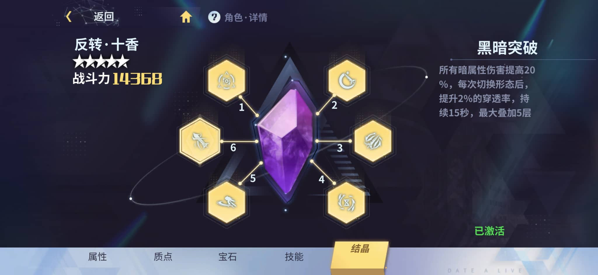
Vị trí 2: Kingship Blessing - Phước lành vương quyền: Trạng thái [Explosive Energy] tăng thêm 35% dmg trong 8s
Vị trí 3: Sword of the End - Paverschlev: Dạng [Nahemah] tăng 25% tốc độ đánh, dạng [Paverschlev] tăng 20% atk
Vị trí 4: Dark End: giảm 20% CD tất cả skill, skill 1,2,3 tăng 20% tốc độ cast
Vị trí 5: Psionic Drain: Khi HP xuống dưới 30%, nhận 2% hút máu trong 5s, cd 60s
Vị trí 6: Dark Break: Tăng 20% dark dmg, sau mỗi lần chuyển dạng tăng 2% pen rate trong 15s, cộng dồn 5 lớp
Bộ vết thánh - Sephira: Phantom Thorn
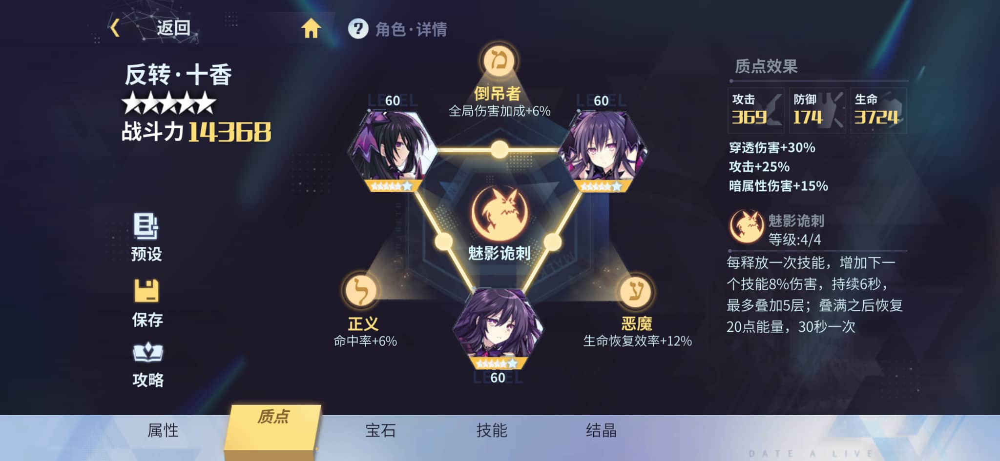
Chỉ số ở 6*:
* Hod - Dark King: +15% dark dmg
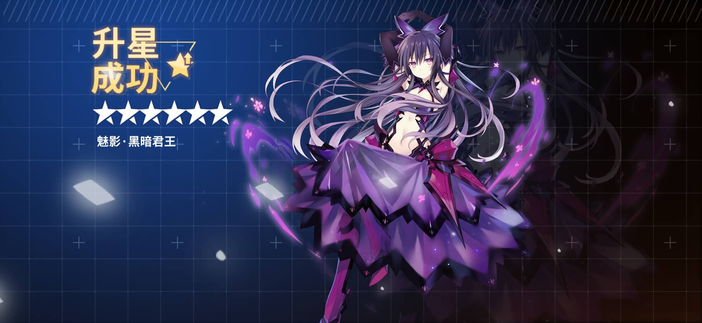
* Tiphareth - Rose Arms: +25% atk
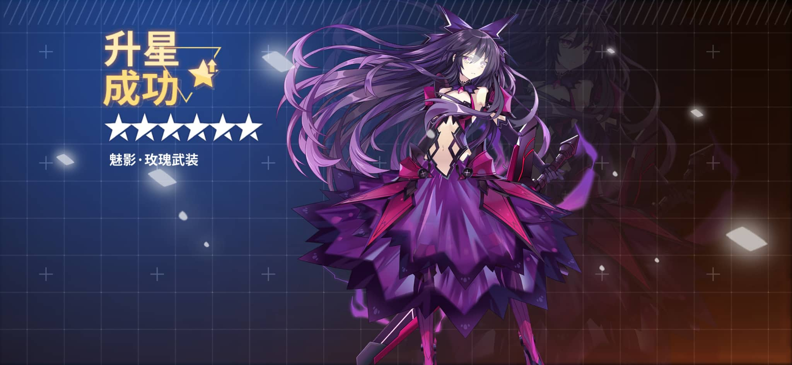
* Geburah - Heroic Posture: +30% pen dmg
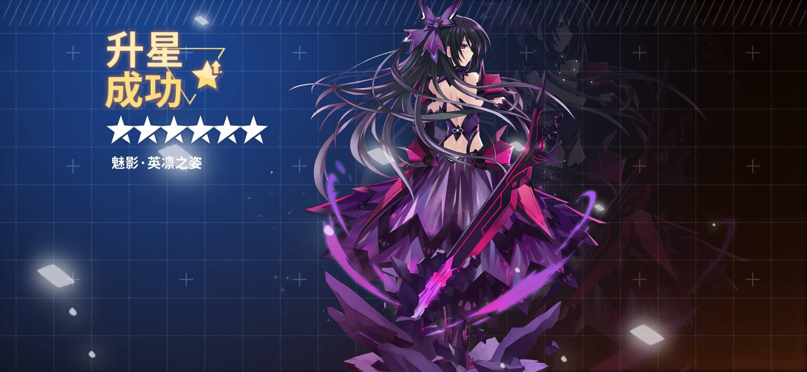
Link Kabbalah:
The Hanged Man: +6% global dmg
Demon: +12% hiệu quả hồi phục
Justice: +6% hit rate
Effect full set: 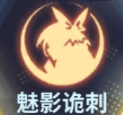
Mỗi khi dùng skill tăng 5%/6%/7%/8% dmg kĩ năng, tồn tại 6s, cộng dồn 5 lớp. Khi đạt đủ 5 cộng dồn hồi 20 linh lực, cd cho hiệu ứng này là 30s
Runestones
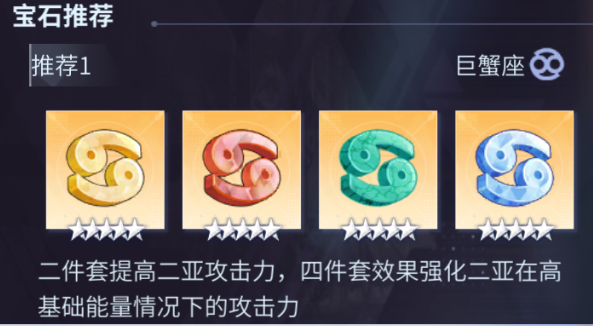
Hiệu ứng set 4: tăng 6% atk với mỗi 10 điểm linh lực hiện tại, tăng tối đa 60% atk
Nhà phát hành gợi ý sử dụng bộ Runestones Gemini cho Inverse Tohka. Tuy effect set 2 tăng skill dmg khá hợp, nhưng eff set 4 chỉ phù hợp khi đi các stage creep. Vì vậy lựa chọn thay thế đó là rune Cancer. Ngoài ra có thể sử dụng set Leo, hoặc mix các set có hiệu ứng tăng sát thương với nhau. Tuyệt đối không sử dụng set Moon, do Inverse Tohka hiếm khi đánh thường, và không cần buff chỉ số dark dmg.
Đánh giá và lối chơi
Với các thông tin trên, có thể thấy Inverse Tohka là một char có khả năng gây sát thương rất mạnh. Tuy các chỉ số cơ bản cũng như scale trong kĩ năng không quá ấn tượng, nhưng bù lại Inverse Tohka lại sở hữu rất nhiều các effect buff sát thương.Về xây dựng chỉ số, Inverse Tohka chỉ tập trung xây dựng các dòng ATK (cả cộng thẳng lẫn phần trăm), pen rate, pen dmg. Với 2 chỉ số pen thì nên ưu tiên pen rate.
Về lối chơi, Inverse Tohka là char combo, với khả năng spam skill bất tận. Bạn nên nắm được thời gian cast cũng như luyện tập nhiều để có thể tối ưu khả năng gây sát thương của nhân vật này. Nên nhớ rằng khi đi các boss nguy hiểm, chỉ cần bạn sảy chân hay mất nhịp combo thì khả năng đi 1 sải là rất cao.
Combo tham khảo (lưu ý: combo trong clip chỉ mang tính chất tham khảo, chưa phải là combo tối ưu, các bạn nên tập và thử nhiều để cải thiện)
Link: Combo Inverse Tohka
~ Contributor: Nguyễn Thái Sơn ~